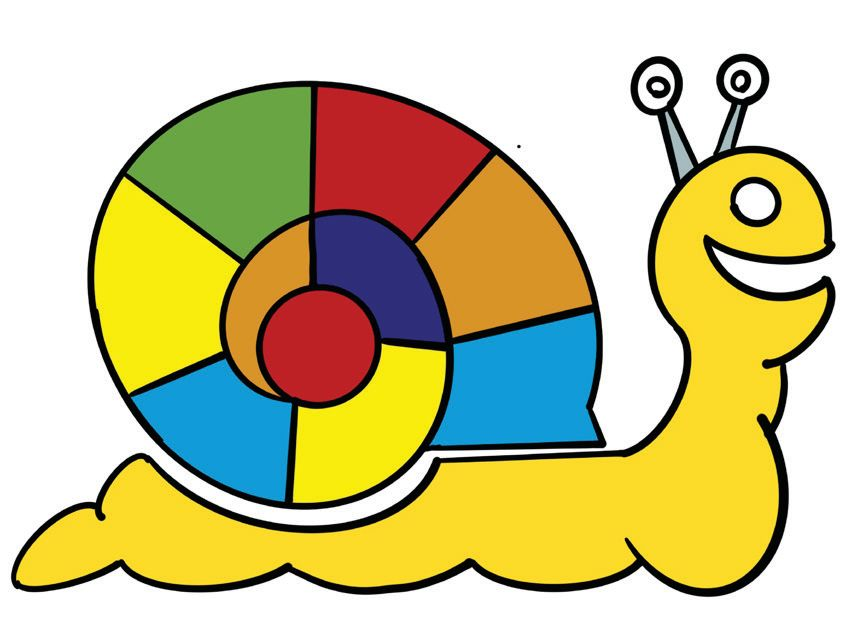
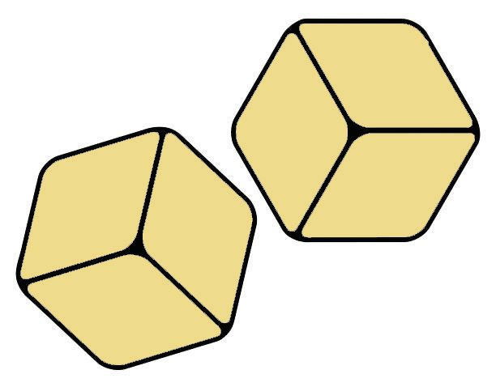
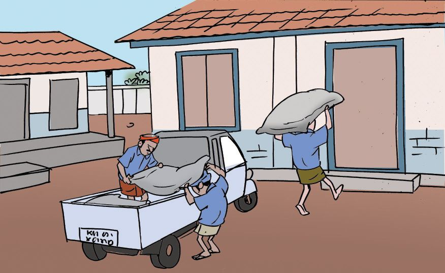

Christmas holidays are over.
Went to school with a new pencil.
Showed it to my friends and my
teacher. Can you guess its length,
she asked. We all wrote down our
gueses. Then we actually
measured the length. Only 4 of
the 30 got their guesses right.
Even I couldnt.....
Read the diary?
Guess the length of the pencil the teacher shows and write it down.
Mine
My friends
cm
Guess
cm
cm
Actual length by measuring
Difference in guessed length and actual length
Mine
Little things
What all things you can think of, shorter than 1 centimetre?
$
Rice grain
$
$
$
Pencil Point
$
$
$
$
$
What is the distance between two news columns in a news
paper. Is it same for all columns?
Toy Cart
Appu made a toy cart using
two medicine cartons.
One box is 9 centimetres and 6 millimetres long and the other is 7
centimetres and 8 millimetres long.
What is the length of his cart?
How do we find out?
$ We know the length of each box.
$ Each is in centimetres and millimetres.
$ Lets add them
How about
changing both to
millimetres and
adding?
10 millimetres make
1 centimetre.
So, 14 miullimetres is
1 centimetre and
4 millimetres.
Page 51
Figure fig_ch04_p051_01 (Page 51)
Two pieces
A 16 centimetre long string is cut into two pieces. The length of
one piece is 8 centimetres and 6 millimetres. What is the length
of the other piece?
$
What all things are given?
Length of full string
Length of one piece
$
How do we calculate the length of the other piece?
We must subtract the given length of a piece from the length of
the full string.
That is subtract 8 centimetres and 4 millimetres from 16
centimetres.
Shapes
Look at the shapes Bandhura made using eerkkil bits.
e
etr
ill
B
nti
im
me
etr
tre
es
s
s
6 centimetres
6 centimetres
3 centimetres
6 millimetres
C
es
3 centimetres
6 millimetres
imetre
3 centimetres
timetr
3 centimetres
3
res
met
enti
s
etre
illim
6 mill
ce
2m
3 cen
2m
i m tres
nt
e
e
c llim
3
i
8m
4 c
c
8 m entim
ill
im e t r e s
etr
es
A
4
s
6 centimetres
These are
perimeters,
right?
What is the length of eerkkil
used to make each shape.
...... cm. ...... mm.
between C and A
...... cm ...... mm
B
...... cm. ...... mm.
between B and A
...... cm ...... mm
C
...... cm. ...... mm.
between B and C
...... cm ...... mm
A
132
What are the differences
in lengths?
Page 53
Figure fig_ch04_p053_01 (Page 53)

Figure fig_ch04_p053_02 (Page 53)

Figure fig_ch04_p053_03 (Page 53)
Teacher drew a line on the board, 10 centimetres and 3
millimetres long. Johny extended it by 8 centimetres and
8 millimetres. What is the length of the line now?
Ramla cut a ribbon into two pieces. One piece is 30
centimetres, 8 millimetres long and the other is 34
centimetres, 2 millimetres. How long was the ribbon?
The rain gauge showed 6 centimetres, 8 millimetres on
Monday and 6 centimetres and 4 millimetres on Tuesday.
What is the total rainfall on these days together?
Jalaja cut a string of length 96 centimetres into two pieces.
The length of one piece is 40 centimetres and 8
millimetres. What is the length of the other piece? What
is the difference in lengths of the pieces?
A 50 centimetre long ruler is broken into two pieces. The
length of one piece is 23 centimetres and 6 millimetres.
What is the length of the other piece?
A can is 72 centimetres high. It contains water, 53
centimetres and 4 millimetres high. What is the remaining
height?
Thousand metres
Meena and Mary went to the school ground for an early morning
waik. One round is 150 metres.
I did 5
rounds.
Today I did
6 rounds.
How much did each walk?
Meena
Mary
To complete 1000 metres
how much more should each
walk?
Meena
Mary
Water tank
The Grama Panchayat decided to lay pipes from the water tank to the
school. On the first day, 1 kilometre and 800 metres of pipe was laid
and on the second day, 1 kilometre and 500 metres. What is the total
length of pipes?
$
What all things are given?
First day
1 km
800 m
Second day
1 km
500 m
Total
1 km
800 metres +
1 km
500 metres
2 km 1300 metres
We could also
have changed both lengths
to metres and add.
Then change back into
kilometres and metres.
1300 metres = 1 km. 300 metres
2 km + 1 km + 300 metres = 3 km 300 metres
Decreasing Distance
The 9 kilometre read from town to school is being tarred. 4 kilometres
and 300 metres are done till yesterday. How much more remains now?
$ Length of the road
$ Length tarred
$ We want to find the length of remaining part.
$ The length tarred is to be subtracted from the length of the road.
There is another way.
9 kilometres
=
4 kilometres 300 metres =
That is, remaining
=
8 kilometres
4 kilometres
+1000 metres
+ 300 metres
4 kilometres
+ 700 metres
4 kilometres 700 metres
To attend the Science Fair, children travelled three and a half kilometres in a bus and then walked 500 metres. How many metres in
all ?
. In kilometres?
Raju travelled 16 kilometres in a bus and 175 kilometres in a train
to reach Shoranur. How many kilometres did he travel in all?
Abu goes for a walk each day morning and evening 800 metres in
all. What is the total distance in kilometres, that he walked in
January?
Shyamala walks 800 metres to school, Molly 750 metres and
Mubeena 600 metres. How many metres does each walk, to school
and back? Write it in kilometres and metres.
Stone walls are being built on both sides of a canal, 6 kilometres
long. On one side, 3 kilometres and 650 metres are built and on
the other, 4 kilometres and 50 metres. How much more is it to be
done on each side?
Pipes are to be laid for 9 kilometres and 500 metres. 7 kilometres
and 600 metres are done. How much more to complete the work?
The 8 kilometres and 200 metres stretch to the factory is to be
electrified and 2 kilometres are done. How much more remains?
How far?
See the distance by train from Thiruvananthapuram to various
places.
Thiruvananthapuram 0 kilometres
Kollam
65 kilometres
Kottayam
161 kilometres
Shoranur
327 kilometres
Kozhikode
414 kilometres
Kasaragod
589 kilometres
$
What is the distance by train from Thiruvananthapuram to Kasaragod?
$
How far must one travel from Kottayam to reach Kasaragod by train?
$
Ernakulam is 59 kilometres away from Kottayam in the direction
of shoranur. How long one must travel from Thiruvananthapuram to
reach Ernakulam?
$
How many kilometres does a train travel in its journey from
Kasargod to Kollam?
$
Which is nearer to Ernakulam, Kollam or Kozhikode?
Drinking Water
The Poomana Water Project supplies drinking water to five places.
The lengths of pipe laid are as follows.
From tank to Kunnumel
Kunnumel to Anakkara
Anakkara to Chillani
Chillani to Kolakam
Kolakam to Muthamala
360m.
630m.
440m
720 m
850m
What is the total length of pipe laid?
How many kilometres is this?
The wages for laying pipes is 69 rupees per metre. How much is spent
as wages for laying pipes to each place?
How much is spent in all as wages?
On myself
Yes
No
Understood what is to be found out
Found out the calculations to solve the problem
Got the correct answer through right methods
Could explain the method of solution
Harvest Time
The Haritha club gathered in their crop of vegetables for Onam.
Pumpkin is
the most 95
kilogram.
5 kilograms
more to make a
quintal.
A quintal is 100
kilograms, right?
Look at the weights of other vegetables they got.
How many kilograms more for each to make a quintal?
Item
Weight
To make a quintal
Tomato
72 kilograms
28 kilograms
Cucumber
86 kilograms
Bitter gourd
63 kilograms
Banana
90 kilograms
Beans
35 kilograms
Onam Feast
Haritha Club provided vegetables for the Onam Feast.
Item
Weight (kg)
Tomato
15
Cucumber
10
Bitter gourd
8
Pumpkin
10
Banana
15
Beans
15
$ How many kilograms did they give in all?
$ Some of the vegetables in the list are such
that, if double the weight of any of them
is bought, the total would be one quintal.
Which are they? How much of each is
there now.
What I found
Item
What my friend found
Weight (kg)
Item
Weight (kg)
139
Page 60
Figure fig_ch04_p060_01 (Page 60)
$
The remaining vegetables were sold to the members of the club.
Tomato, Cucumber and pumpkin at 15 rupees a kilogram bitter gourd
and beans at 23 rupees a kilogram, bananas at 28 rupees a kilogram.
How much money did the club make?
How do we calculate?
?
What about a table?
?
What all things in the table?
?
?
In which item they got maximum price? And the least?
Rice Distribution
Rice was distributed to170 children of classes 1 and 2 at 5 kilograms
each.
?
How many kilograms of rice was distributed?
?
If one sack contains 50 kilograms of rice, how many sacks are
needed?
How many sacks of one quintal are there?
How much rice would be left?
For classes 3 and 4, 9 sacks of one quintal and one sack of 50 kilograms
were needed.
?
How many kilograms of rice in all?
?
How many children are there in classes 3 and 4 together?
?
How many kilograms of rice was distributed in all four classes together?
?
If all of this were in one quintal sacks, how many sacks would have
been there?
140
For the Onam feast, 350 kilograms and 50 kilograms of sugar were
brought to the school. The charges for unloading is 15 rupees per quintal.
How much must the school pay?
The vehicle fare is 225 rupees for 9 kilometres. How much is it for
each kilometre?
Cooking
One ton?
How much is
that?
The small vehicle
can carry only one
ton.
One ton is
thousand
kilograms
For cooking, 1500
kilograms of firewood
were bought.
1500 kilograms make
$
How many quintal?
$
How many kilograms more of firewood
is needed to make 2 tons?
$
How many quintals is it?
What I understood
100 kilograms =
1000 kilograms =
10 quintal =
Sovereign
The table below shows the weight of some gold ornaments in a jewellery shop.
Item
Chain
Bangle
Sovereign
3
4
Ring
1
2
Ear rings
1
2
Necklace
Total
Grams
How many
sovreigns are there
in one kilogram
of gold?
2
141
Page 62
Figure fig_ch04_p062_01 (Page 62)

Figure fig_ch04_p062_02 (Page 62)
Paddy Collection
See the amount of paddy the society collected during the past five
days.
On the first day, they got 1375 kilograms. On the second day they
got 150 kilograms loss. On the third day, 325 kilograms less than
second day. On the fourth, 100 kilograms more than the third day.
They collected 6000 kilogram on all five days together.
Write the amount of paddy in Kilograms got each day.
?
1
2
3
4
5
How many tons of paddy were collected in all?
?
How many quintals?
?
-
How many quintals were got on the first two days together?
-
?
How many tons were collected on the foruth day?
?
How much more is needed to make the collection on the third day one
ton?
142
Page 63
Figure fig_ch04_p063_01 (Page 63)
Kitchen
The school kitchen is being rebuilt. 6 tons of sand, 2 tons of cement
and 3 tons of gravel.
?
How many kilograms is each of these.
Sand
?
Cement
Gravel
Cement
Gravel
In quintals,
Sand
$
Two types of metal rods were bought. 1375 kilograms of thick rods
and 3625 kilograms of thinner rods.
?
How many tons of rods in all?
?
What is the difference in the weights of the two types?
Vegetable garden
The table shows the weights of vegetables Ramu got from his garden.
Fill in the blanks
Item
11/1/2015
18/1/2015
Tapioca
Banana
Yam
Cucumber
Water melon
Cabbage
980
620
190
530
680
240
1040
475
230
470
705
320
(Kg)
(Kg)
Total
(Kg)
Ton
2
Quintal Kilogram
-
20
4
60
The price of banana is 29 rupees per kilogram. How much will he get for
his bananas?
All the cabbage were packed into 4 sacks of the same size. How many kilograms are there in each sack?
What is the difference in the weights of tapioca in the first and second
weeks?
143
Anniversary
For anniversary feast, the old students provided the things needed.
Some of the things they bought are these:
Rice ..........................................825 Kg.
Sugar ..................................... 3 quintals
Ghee ...................................5 Kg 500 g.
Cashew nut ...................................2 kg.
Raisin ..........................................500 g.
Rice is in sack of 50, 75 and 100 kilograms. How many of each?
How much more rice would make one ton?
How many kilograms of sugar is there?
How many grams of cashew?
Ghee, cashew and raisin are in a single bag. What is the weight of the
bag?
On myself
Understood what is to be found out
Found out the calculations needed to get the answer.
Got the correct answer using right methods.
Could correctly use the relations between gram, kilogram
quintal and ton.
Could explain the method of solution to others.